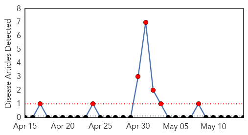
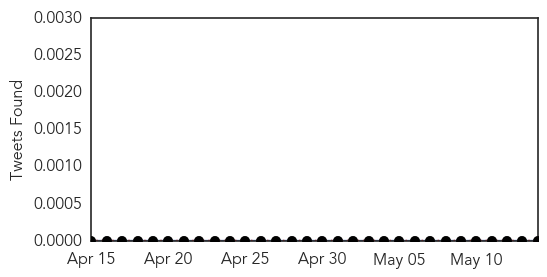
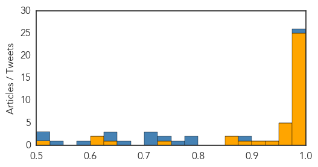

Bubonic Plague
30-Day Web Trend
7 alerts, 0 warnings

30-Day Twitter Trend
0 alerts, 0 warnings

Article Locations

Article Confidences

Top Articles:
-
No articles found for May 14, 2015
Top Tweets:
-
No tweets found for May 14, 2015
Ebola
30-Day Web Trend
0 alerts, 1 warnings

30-Day Twitter Trend
0 alerts, 0 warnings

Article Locations

Article Confidences
Top Articles:
- 1.000
- Ebola not mutating beyond 'normal' rate, scientists say
- 1.000
- Patient at UConn Health Center tests negative for Ebola
- 1.000
- Nurse Returning from Sierra Leone Is First Ebola Case Diagnosed in Italy
- 1.000
- Lessons from Nigeria on Ebola
- 1.000
- Denver Journal of International Law and Policy
- 1.000
- Ebola outbreak in Sierra Leone: reflections on clinical and research involvement
- 0.999
- Baptist leader celebrates Ebola-free Liberia
- 0.999
- First confirmed Ebola case in Italy
- 0.999
- Genomics laboratory capability in Liberia supports Ebola virus outbreak response
- 0.999
- Genomics laboratory capability in Liberia supports Ebola virus outbreak response
- 0.999
- Italian nurse positive for Ebola not in critical conditions --China Economic Net
- 0.998
- First confirmed Ebola patient in Italy
- 0.998
- Patient in Connecticut Tests Negative for Ebola
- 0.998
- Think Again: Why did Liberia beat Ebola before Guinea or Sierra Leone? - Liberia
- 0.998
- Patient in Connecticut tests negative for Ebola
- 0.997
- President Mahama hails Liberia on Ebola free status
- 0.994
- Make Charitable Donations Online, Sponsor a Child, Charity Fundraising, Help Children, Help Communities
- 0.994
- Westporter Explains How His U.N. Team Ended The Ebola Crisis
- 0.993
- Ebola Outbreak Prompts Potential WHO Reform
- 0.989
- Where's The Media's Ebola Mea Culpa?
- 0.985
- Ebola virus evolved at normal rates during epidemic, scientists say
- 0.982
- Ebola nurse conditions 'worse' - update 2
- 0.982
- Guinea: Enhanced community engagement to bring the Ebola outbreak to an end
- 0.978
- Case of Ebola virus disease confirmed in Italy
- 0.975
- How Nigeria beat the ebola virus in three months
- 0.975
- Guinea: Enhanced community engagement to bring the Ebola outbreak to an end - Guinea
- 0.973
- Ebola: Counting the Cost, Articles
- 0.964
- Sierra Leone News:’My time in SaLone has been great”- Dr Zheng « Awoko Newspaper
- 0.963
- Chinese, U.S. experts urge global cooperation to fight epidemics
- 0.962
- Ebola in Liberia: what it took to get to zero - Liberia
- 0.949
- Cokie van der Velde
- 0.919
- Dep. Health Minister commends Chinese ITERP program « Awoko Newspaper
- 0.892
- West Africa Fistula Foundation
- 0.860
- Government Spokesman Abdulai Bayraytay speaks to Sierra Leoneans in America
- 0.856
- Liberia churches celebrate end of Ebola
- 0.728
- Ebola survivors hail Social Aid Volunteers in Kambia
- 0.645
- Prison time for defying health orders
- 0.619
- Ebola R&D, Antibiotic Resistance, Neglected Diseases Among Issues At This Year’s World Health Assembly
- 0.608
- Child Fund Boost PHU’s in Bombali « Awoko Newspaper
- 0.517
- Empathy, patient privacy key for medical officials during a crisis
Top Tweets:
- 0.998
- Genomics laboratory capability in Liberia supports Ebola virus outbreak response - Medical Xpress http://t.co/U8lUW8Cs1b ebola EVD
- 0.986
- Genomics laboratory capability in Liberia supports Ebola virus outbreak response - Medical Xpress http://t.co/exJ2JOFB7h
- 0.948
- UConn Patient Monitored for Ebola Tests Positive for Malaria - NBC Connecticut http://t.co/2d0OAVMYHr ebola EVD
- 0.901
- Guinea: Enhanced community engagement to bring the Ebola outbreak to an end - International Federa... http://t.co/sy28baXobP ebola EVD
- 0.886
- Ebola R&D, Antibiotic Resistance, Neglected Diseases Among Issues At This ... - Intellectual Prope... http://t.co/5ooJkH32nw ebola EVD
- 0.881
- Researchers map evolution of Ebola in Sierra Leone - The Hindu http://t.co/IOKedxK8uP ebola EVD
- 0.846
- Patient At UConn Health Tests Negative For Ebola - Hartford Courant http://t.co/eqEj5PmBRJ
- 0.838
- Latest situation report shows 2 Ebola cases in Sierra Leone & 9 in Guinea in week through 10 May - encouraging signs http://t.co/ZuCJ6BZVqH
- 0.833
- Where's The Media's Ebola Mea Culpa? - Media Matters for America (blog) http://t.co/d8uN4KonIP ebola EVD
- 0.814
- Possible Ebola Cure May Be Found In Native African Plants - WABE 90.1 FM http://t.co/Wi3oNrA4bE ebola EVD
- 0.799
- 'Ebola' terrorises Riverton Residents - Jamaica Gleaner (subscription) http://t.co/b6GTueVipV ebola EVD
- 0.763
- May 14 news on avianflu avianinfluenza Ebola EbolaResponse MERS NepalQuake WHA http://t.co/cNuG9pUZhM
- 0.721
- RT: Tolbert Nyenswah, the great Ebola Response leader stays cool on Liberia´s Ebola Victory Day: Let´s also beat Measels! http…
- 0.714
- Emergent BioSolutions, Glaxo Initiate Ebola Vaccine Study - http://t.co/dHKFn8tP29 http://t.co/HoLOHpody2 ebola EVD
- 0.707
- Nurse in Italy tests positive for Ebola after returning from Sierra Leone http://t.co/pxLGwxsXef
- 0.686
- Short film from Freetown by : The Ebola Stigma Vaccine https://t.co/y7j61xQYti
- 0.684
- 'Ebola nurse' chastises Christie in article, calls her N.J. quarantine a ... - http://t.co/gJHXqVkJbV http://t.co/FCBKGKmEgw ebola EVD
- 0.638
- Fabrice Muamba soutient l'Afrique contre Ebola AfricaAgainstEbola onstensemble http://t.co/7phZX8xVfM
- 0.638
- Ebola survivors fight back in plasma studies - Science Magazine (subscription) http://t.co/QuM8cZDFcK ebola EVD
- 0.609
- UConn Patient Monitored for Ebola Tests Positive for Malaria - NBC Connecticut http://t.co/CgskLxP1Ob
- 0.512
- AFD Blog `Referral: @MackayIM On The Road To Zero Ebola Cases In West Africa' http://t.co/zckXMIri5g